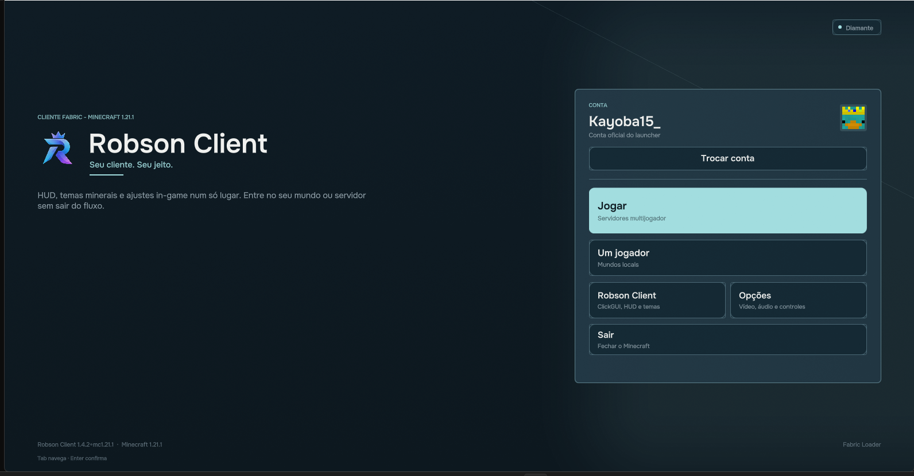
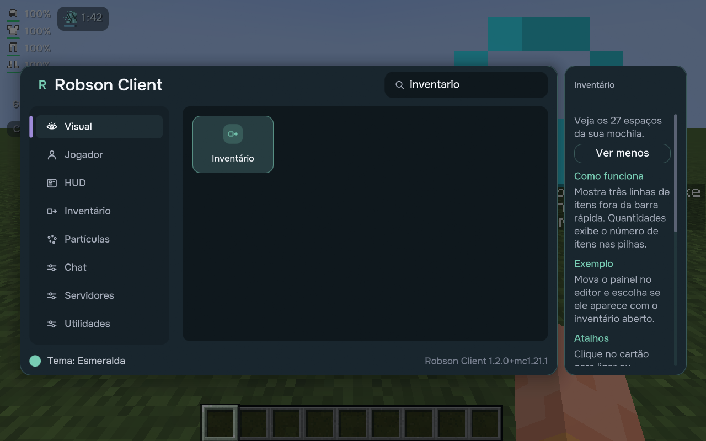

O que muda no Robson Client
Acompanhe a evolução do client. Clique em cada versão abaixo para desenrolar o pergaminho com as novidades visuais, novos menus e melhorias feitas para os jogadores.

Card com skin do player, seleção de temas e atalhos rápidos.

Botão TR na barra de chat e botão de copiar mensagem.

Ajuste livre de escala, posição e opacidade na tela.
✨ Destaques da Atualização
Interface mineral refinada, card exclusivo com a skin do seu jogador e troca instantânea entre os temas Diamante, Ametista e Esmeralda.
Ao apertar Esc, visualize o card da sua sessão com botão direto para o ClickGUI e HUD Studio, mantendo todos os botões vanilla intactos.
Crie pastas para organizar seus servidores favoritos, fixe os mais jogados no topo e acompanhe o ping numérico colorido em milissegundos.
Alterne facilmente entre a sua conta oficial do launcher e perfis offline com identificação de skin direto nas telas do client.
Botão TR na barra de chat. Traduz automaticamente mensagens privadas e comandos globais preservando cores, tags e prefixos dos servidores.
Copie qualquer mensagem ou comando do chat para a área de transferência com um clique no botão lateral da linha.

Visual mineral lapidado com tons frios e precisão.

Estratos de geodo violeta com detalhes em cobre.

Pedra verde com acabamento de oficina de deepslate.
✨ Melhorias da Versão
Cada tema oferece atmosfera própria sem mudar o layout ou a navegação do ClickGUI. Tudo continua no mesmo lugar.
Digite o nome de qualquer módulo ou configuração para encontrar instantaneamente no menu com filtro em tempo real.
Filtros de menção destacada, anti-spam configurável e histórico estendido para nunca perder uma mensagem importante.

Teclado de emojis e símbolos especiais para o chat.

Transferência rápida de itens e prévia de baús de shulker.
✨ Recursos Iniciais
Barra auxiliar no chat para enviar mensagens frequentes e comandos com apenas um clique.
Configure teclas de atalho para enviar comandos como /home, /spawn e mensagens rápidas em servidores.
Brilho total ajustável sem alterar as texturas vanilla, além de aviso visual de armadura desgastada.